Explore Langbiang Peak - Legendary Symbol in Da Lat
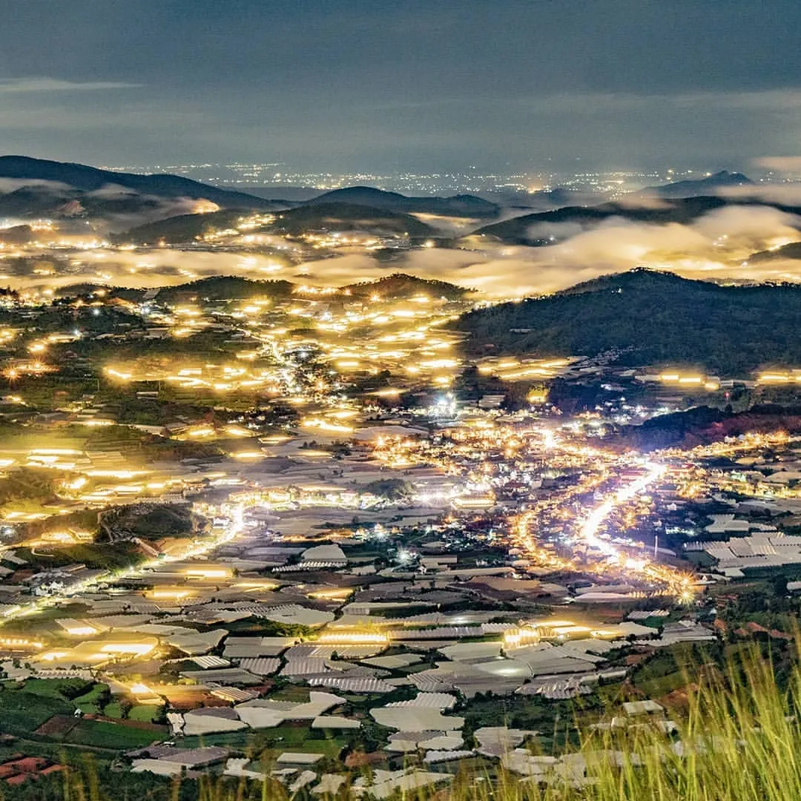
Table of Contents
- 1. Introduction to Langbiang Da Lat peak
- 2. Share experiences exploring Langbiang Da Lat peak
-
3. What is there to see at Langbiang peak? Top 10 experiences not to be missed
- 3.1. Experience Jeep conquering Langbiang peak
- 3.2. Challenge yourself with the Langbiang mountain climbing journey
- 3.3. Paragliding – New perspective from Langbiang peak
- 3.4. Horseback riding - Transform into a cowboy in the mountains and forests of Da Lat
- 3.5. "Virtual living" burns the engine in unique miniature landscapes
- 3.6. Camping and cloud hunting - An indispensable experience at Langbiang peak
- 3.7. Walk on the suspension bridge at Mimosa beach
- 3.8. Full view of Da Lat city and Suoi Vang lake
- 3.9. Sip a cup of coffee in a romantic space
- 3.10. Visit Hundred Years Valley with 1001 exciting activities
- 4. Cuisine suggestions near Langbiang peak
Do you want to know where Langbiang peak is, how much the ticket costs, and what attractions there are? Let's explore in detail the highest mountain in Da Lat - the legendary natural symbol of the foggy city right in this article!
Langbiang Mountain, one of the most famous and attractive tourist destinations in Da Lat, not only has majestic natural beauty but also contains touching love stories. With an altitude of 2,167 meters, Langbiang is a place that challenges and invites those who love to explore and experience nature.
1. Introduction to Langbiang peak in Da Lat
1.1. Where is Langbiang Peak located?
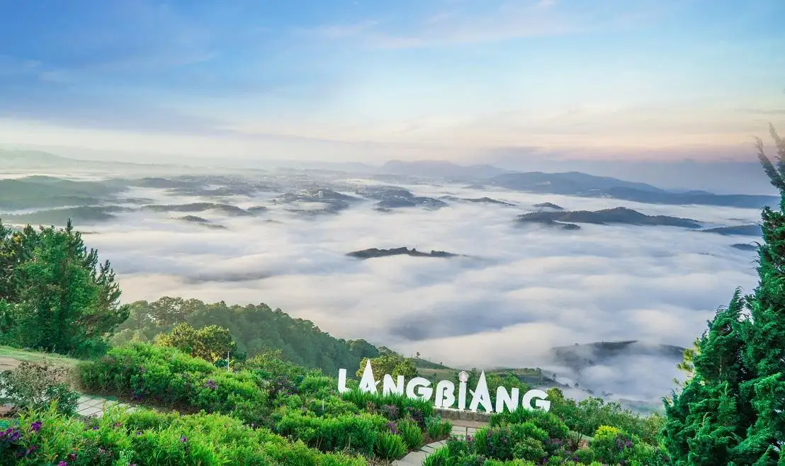
- Location: Lac Duong town, Lac Duong district, Lam Dong province - about 12km north of Da Lat center.
Langbiang is one of the prominent destinations when traveling to Da Lat. This is a famous eco-tourism area with green natural scenery all year round, fresh air and an ideal view of the foggy city from above.
In addition to natural beauty, this place also possesses the cultural identity of indigenous ethnic people such as K'Ho, Lach, Chil,... making the journey of discovery special and memorable.
1.2. How high is Langbiang peak?
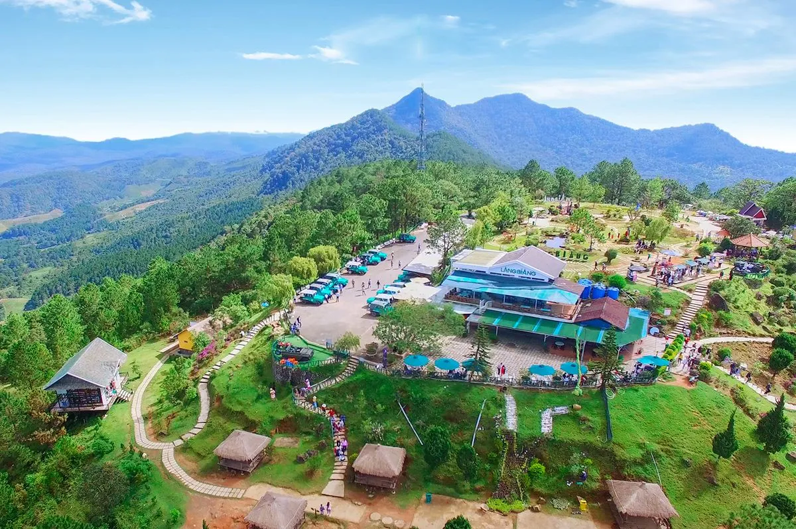
With an altitude of 2,167 meters above sea level, Langbiang peak is known as the "roof" of Da Lat city. From the top of the mountain, visitors can admire the entire dim landscape of pine forests, valleys and winding streams in the distance - an experience not to be missed when coming to Da Lat.
1.3. How far is Langbiang from the center of Da Lat?
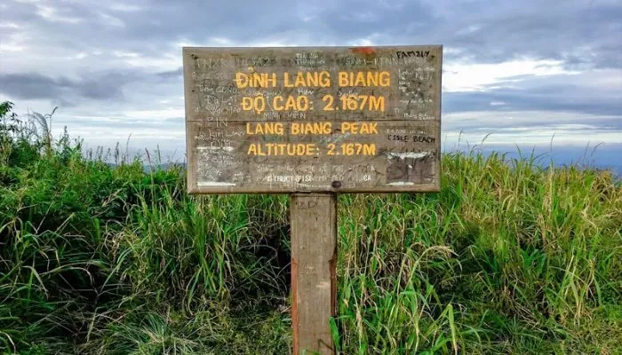
From the city center, you only need to travel about 12km to reach the foot of Langbiang mountain. The road passes through hillsides covered with wildflowers, green pine hills and vegetable fields, making the trip not only a journey of discovery but also a poetic excursion.
1.4. The story of Langbiang peak
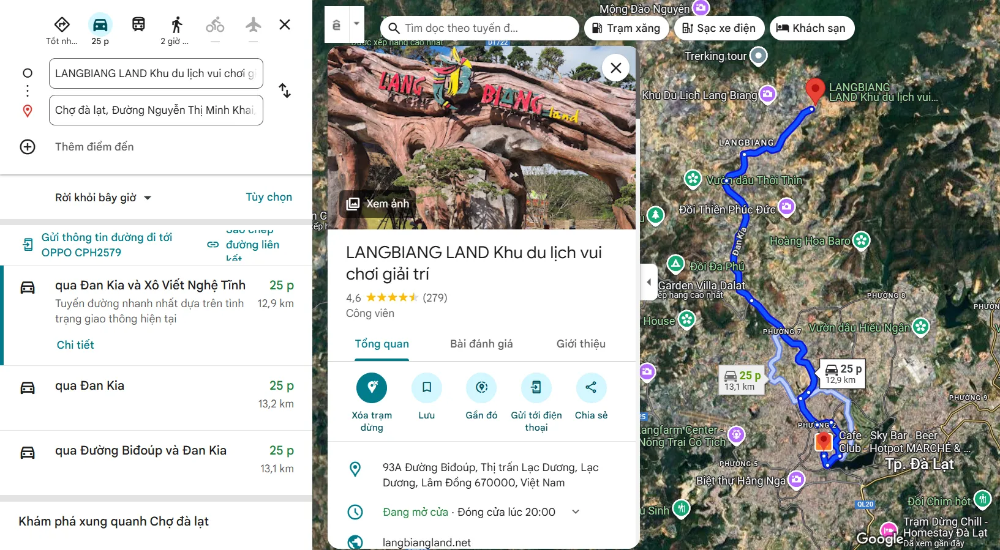
In addition to the beautiful natural scenery and attractive entertainment activities, Langbiang Da Lat peak also attracts tourists because of the touching legendary story associated with this place. According to folk tales, long ago there were two tribes living at the foot of the mountain - the Chil tribe and the Lat tribe.
Among those two tribes, there is the boy K'Lang from the Lat people and the beautiful girl H'Biang from the Chil people. While going up the mountain to pick wild fruits, H'Biang was unfortunately attacked by a pack of fierce wolves. K'Lang appeared at the right time and bravely saved her from danger. From that fateful meeting, the love between the two blossomed and grew over the years.
However, because the two tribes have a long-standing enmity due to a curse, their love is strictly forbidden. Despite all barriers, K'Lang and H'Biang decided to leave the village and go to the top of the mountain to live together to preserve their deep love.
Time passed, H'Biang fell seriously ill. Unable to treat himself, K'Lang was forced to return to the village to ask for help. But instead of helping, the villagers thought he was a traitor and threw spears at him. In an emergency, H'Biang rushed out to block the arrow for her husband and died soon after. Too painful, K'Lang cried until his tears ran out, and those tears turned into a large stream named Da Nhim.
After the death of the young couple, H'Biang's father, out of deep regret, merged the two tribes into one - today's K'Ho people. Ong Mountain and Ba Mountain are said to be the resting places of K'Lang and H'Biang, forever together in heaven and earth. The name Langbiang was born as a sacred combination of those two names - an eternal symbol of a faithful love that transcends all boundaries.
2. Share your experience exploring Langbiang peak in Da Lat
If you are planning a visit to Langbiang peak - one of Da Lat's famous tourist destinations - don't miss the detailed experience of exploring Langbiang below. This information will help make your trip smooth, complete and memorable.
2.1. Ticket price to visit Langbiang peak
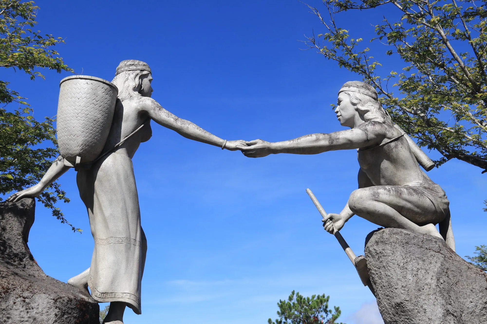
The entrance ticket price to Langbiang tourist area is quite reasonable, suitable for most tourists. Currently, ticket prices are 50,000 VND/adult and 25,000 VND/child (applies to children under 1m2 tall). If you want to save time and energy, you can use the Jeep service to get to the top at a cost of about 120,000 VND/trip.
In addition, if you travel by motorbike or personal car, the parking cost at the resort is only from 5,000 VND/vehicle, very convenient and safe.
*Pro tip*: You should bring cash because some retail services here do not support electronic payments.
2.2. Directions to the top of Langbiang Da Lat
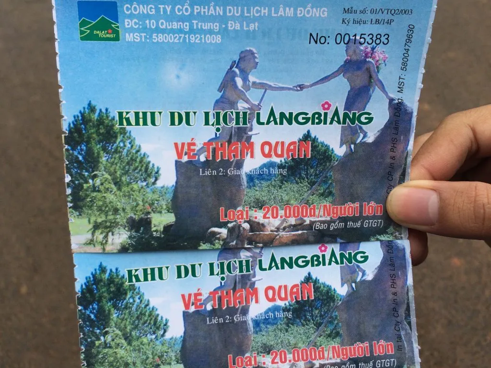
The road to Langbiang peak is quite convenient and easy to go. From Da Lat city center, you only need to travel about 12km, taking about 30 minutesby motorbike or car. The road is largely paved and flat, suitable for all types of vehicles.
Detailed directions are as follows:
- Starting from University intersection near Da Lat market, you follow Nguyen Van Cu street, turn right onto 3/2 street, then continue to turn left onto Phan Dinh Phung street.
- At the end of Phan Dinh Phung street, turn right onto Xo Viet Nghe Tinh street, then go straight to DanKia street.
- From here, continue driving about 5.5km along DanKia road and you will reach Langbiang tourist area.
*Experience going to Langbiang peak*: If you don't know the way yet, use Google Maps or ask local people - they are very enthusiastic for directions.
2.3. Which season is best to go to Langbiang peak in Da Lat?
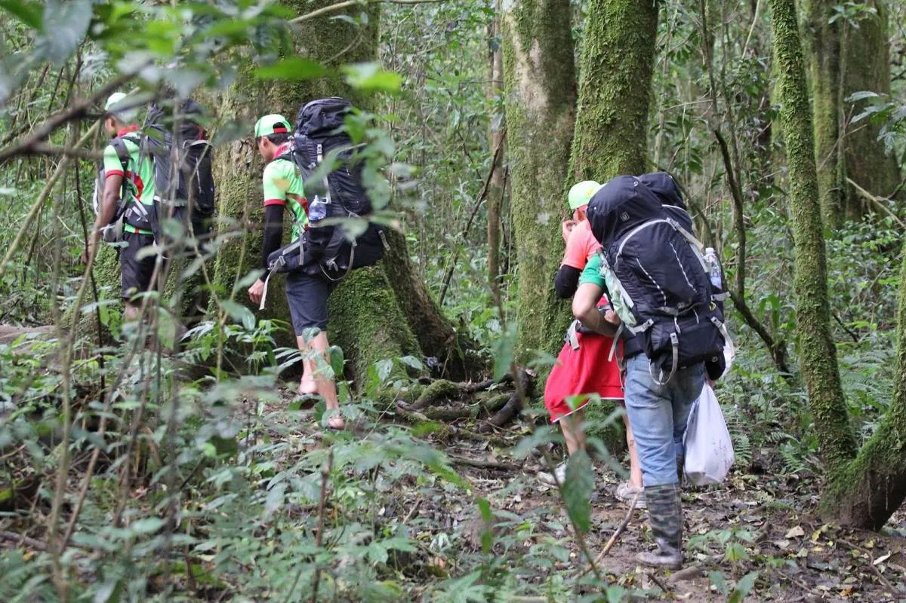
Da Lat's climate is cool all year round, very suitable for outdoor activities. However, the most ideal time to conquer Langbiang peak is from January to July - at this time the weather is sunny, little rain, the road is dry so it is easy to move and climb.
From August to December, the rainy season begins in this area, and roads can become more slippery. However, if you love the scenery Da Lat cloud hunting, this is the ideal time to admire the magical, poetic beauty of this mountain peak.
In addition, during the day, you should choose a time to visit from 8:00 am - 10:00 am or 3:00 pm - 5:30 pm. The weather at this time is not too sunny, the sky is clear, the air is cool - very suitable for climbing Langbiang Mountain, sightseeing, cloud huntingor virtual check-in.
3. What is there to see at Langbiang peak? Top 10 experiences not to be missed
If you are wondering what to do at Langbiang peak, let's explore now 10 exciting activities to make your trip more memorable.
3.1. Experience Jeep conquering Langbiang peak
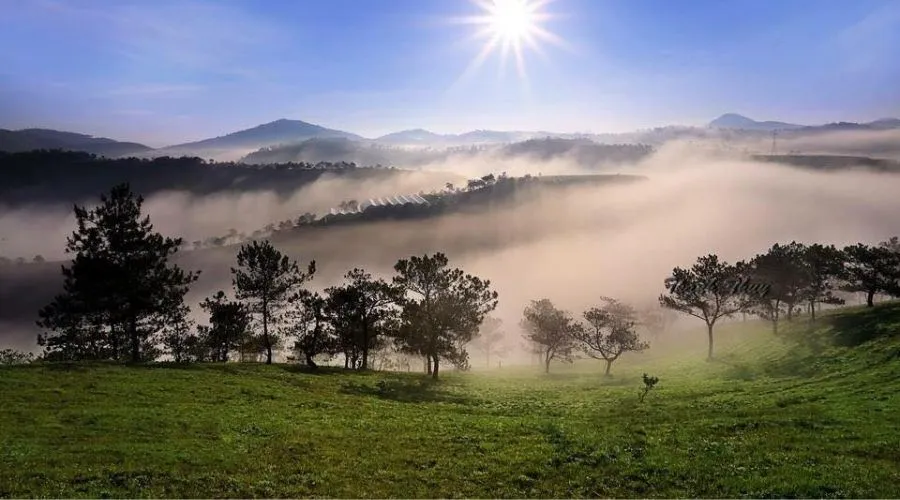
With a distance of about 3km from the entrance gate to the top, a Jeep is the perfect choice if you want to save energy and time. Sitting on an off-road vehicle, you will experience thrilling feelings as the vehicle goes through winding roads, through pine forests and small streams. While traveling in the car while admiring the beautiful natural scenery, it will definitely be an unforgettable memory in the journey to discover Langbiang Da Lat.
3.2. Challenge yourself with the Langbiang mountain climbing journey
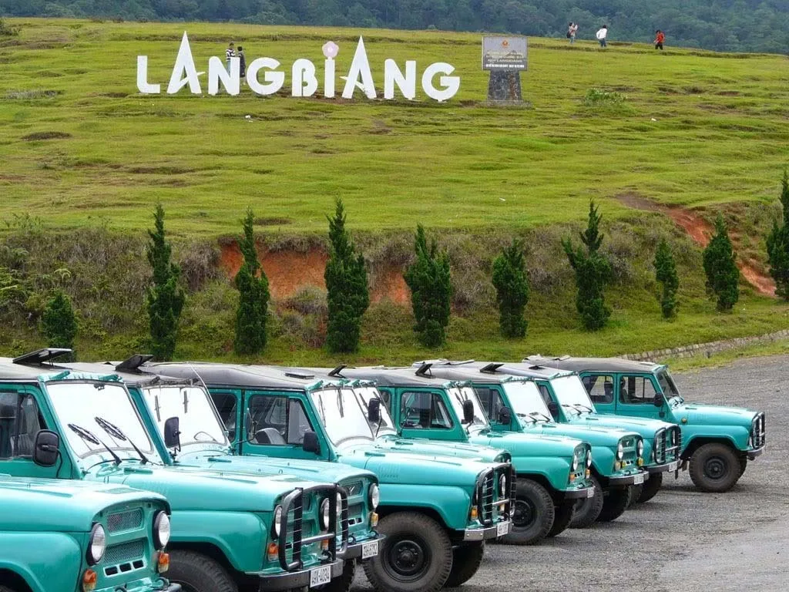
#### 3.2.1. Suggested routes
If you love challenges and are passionate about exploring wild nature, the mountain climbing journey to conquer Langbiang peak will be an experience not to be missed. Currently, there are two popular routes leading to the top of Langbiang mountain in Da Lat: Radar hill climbing route and Ba mountain climbing route. To reach the highest peak, you need to pass two main routes as follows:
- Leg 1: From the tourist area gate to the Bidoup - Nui Ba national park checkpoint. Most visitors will choose the western trail, which is quieter and has less traffic than the Jeep route. On the way, you can see strawberry gardens and green coffee hills.
- Part 2: From the checkpoint, climb to the top of Ba mountain. The road has clear signs, you will overcome long stairs and dense forests to reach the top. Don't forget to rest when needed and bring water and snacks.
#### 3.2.2. Note when climbing Langbiang peak
Although the journey to conquer Langbiang peak is not as arduous as many other mountain climbing routes, in order for the trip to go safely and smoothly, you still need to be carefully prepared both physically and mentally.
First, make sure you are in good health, in good spirits, and bring enough water, snacks, and necessary items. These are important factors to help you maintain energy and limit exhaustion throughout the journey.
In particular, don't forget to prepare a basic medical first aid kit, in case you encounter unexpected situations such as scratches, sprains or collisions. In addition, to ensure greater safety, you should participate in group climbingor go with a group. Separating from the group not only makes it easy to get lost but also poses many unforeseen risks.
In addition to material preparation, you should also equip some survival skills such as: providing first aid for wounds, maintaining a stable breathing rate, using maps or navigation tools... These skills will be very useful in case of an incident, helping you stay calm and handle the situation promptly.
3.3. Paragliding – New perspective from Langbiang peak
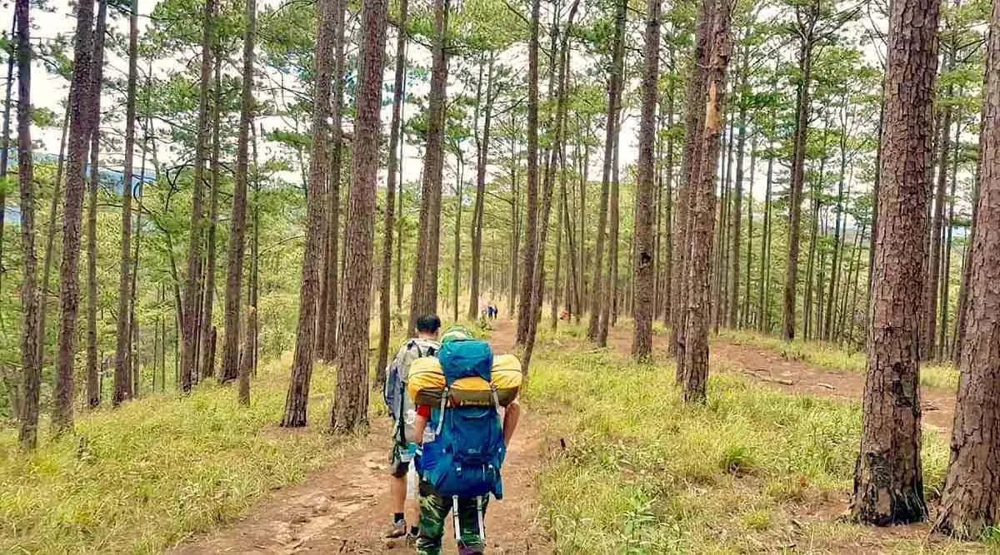
If you love thrills and are not afraid of heights, paragliding in Langbiang will be an unforgettable experience. This activity has attracted many visitors since its launch in 2014.
Before starting, you will be given basic technique instructions by a professional coach. After that, the parachute will be released from the top of Radar and fly down to the area of DanKia Lake. During the flight, you canadmire the panoramic view of Langbiangfrom above – a new and exciting perspective.
3.4. Horseback riding - Transform into a cowboy in the mountains and forests of Da Lat
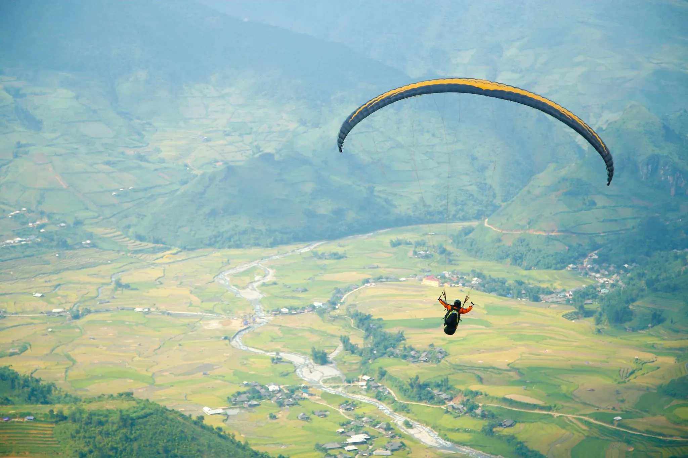
At Langbiang tourist area, you can also participate in horse riding games with the locals. After basic instructions, you will ride horseback through the hillsides, enjoying the feeling of relaxation in nature. Don't forget to take a few check-in photos with this cute "four-legged friend"!
3.5. "Virtual living" burns the engine in unique miniature landscapes
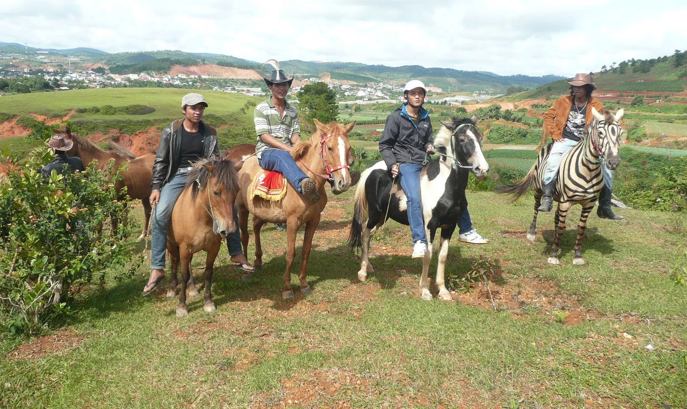
Langbiang Peak is an ideal destination for those who are passionate about taking photos and preserving memories. With lush green natural scenery all year round, this place has no shortage of beautiful shooting angles for you to freely "live virtually".
Visitors can take photos with the statues of K'Lang and H'Biang - legendary symbols of love, or pose next to the infinity swing, the "Langbiang" sign standing out against the blue sky. Just bring a camera or phone and you can record a sparkling photo album, enough to show off on social networks all month long!
3.6. Camping and cloud hunting - An indispensable experience at Langbiang peak
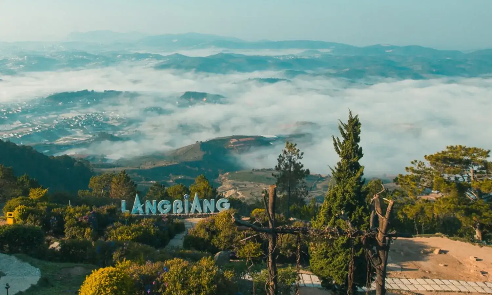
With an altitude of over 2000m, Langbiang peak is the most ideal camping and cloud hunting spot in Da Lat. When camping here, you will enjoy a peaceful space, away from the noise of the city, and relax amidst fresh nature.
In particular, from the top of Langbiang, you can admire the clouds drifting close to your eyes, feeling like you are lost in a magical cloudy space, creating unforgettable romantic moments.
3.7. Walk on the Mimosa beach suspension bridge
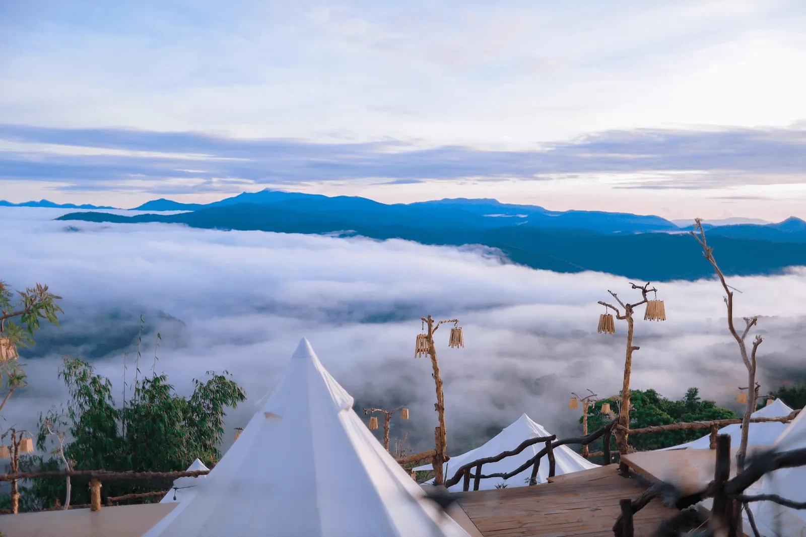
An experience not to be missed when reaching Langbiang peak is checking in to the suspension bridge at Mimosa Beach. Located about 1.5 km from the reception area, Mimosa Beach has a wild and poetic beauty.
You will feel the thrill when walking on the ethnic suspension bridge and admiring the beautiful natural scenery around. Don't forget to pose virtually for impressive photos!
3.8. Full view of Da Lat city and Suoi Vang lake
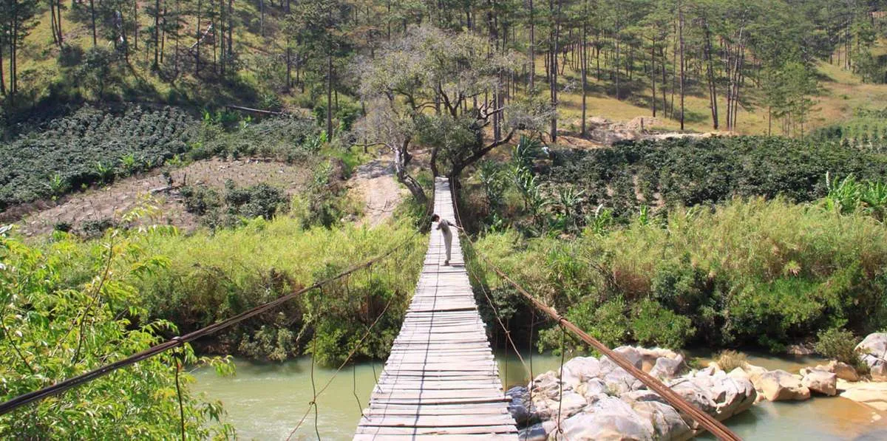
Langbiang peak is considered the "roof" of Lam Vien plateau, where you can easily see the misty panorama of Da Lat and the splendid Suoi Vang lake below. The majestic and poetic natural scenery will leave you overwhelmed.
There are also binoculars on the top to help you clearly admire the beauty of Da Lat city from afar, creating a wonderful sightseeing experience.
3.9. Sip a cup of coffee in a romantic space
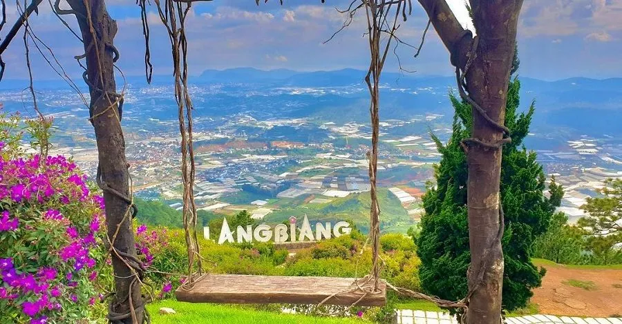
At Langbiang peak, you will find many cafes with airy spaces, ideal for relaxing. In the cool, chilly weather, sipping a hot cup of coffee amid the beautiful natural scenery will bring you a relaxing, pleasant, and memorable feeling.
3.10. Visit Hundred Years Valley with 1001 exciting activities
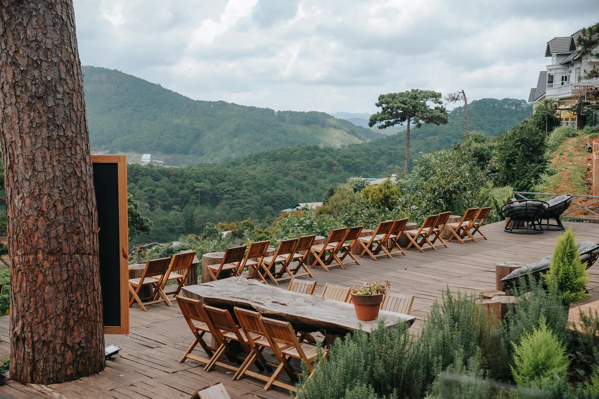
Hundred Years Valley is a destination not to be missed when coming to Langbiang. This is an eco-tourism and entertainment area built on a long-standing cultural foundation.
You can participate in the unique gong festival, interact with local people, light a campfire, enjoy wine and listen to traditional stories of the Central Highlands people - it will definitely be an unforgettable experience.
4. Cuisine suggestions near Langbiang peak
After exploring the majestic beauty of Langbiang peak, take time to visit *Xom Leo Grill & Chill Shop* to enjoy delicious dishes. With a cozy space, diverse menu and dedicated service style, this place will definitely be the ideal stop for you.
📌Address:113 Huynh Tan Phat, Ward 11, Da Lat, Lam Dong 67000
📌Inbox:m.me/nuongxomleo
📌Google Maps:See directions
📌Hotline:076.45.27.336 – 08.99.42.84.34 – 0902.91.22.40
Langbiang Peak is not only a tourist symbol of Da Lat but also an ideal destination for those who love to explore and experience. The majestic natural scenery, meaningful love story and interesting activities here will bring you unforgettable memories. Don't forget to stop by Xom Leo Grill & Chill Shop to enjoy a delicious meal, creating more memorable memories in your journey to explore the city of flowers!